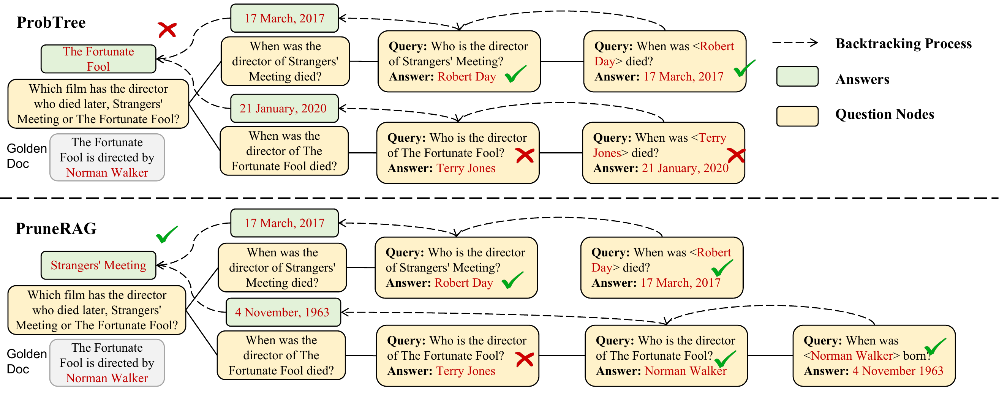
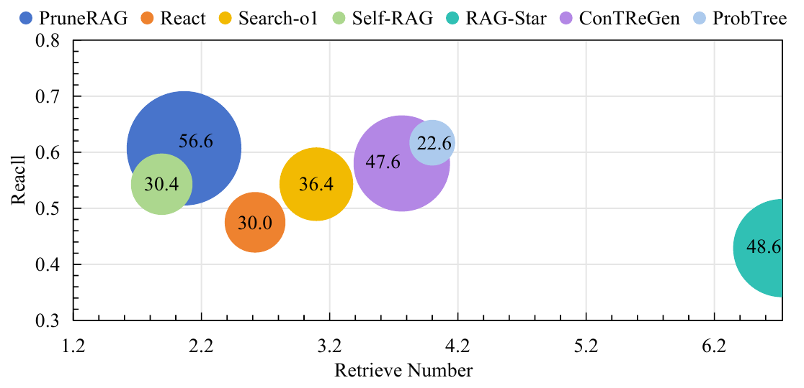
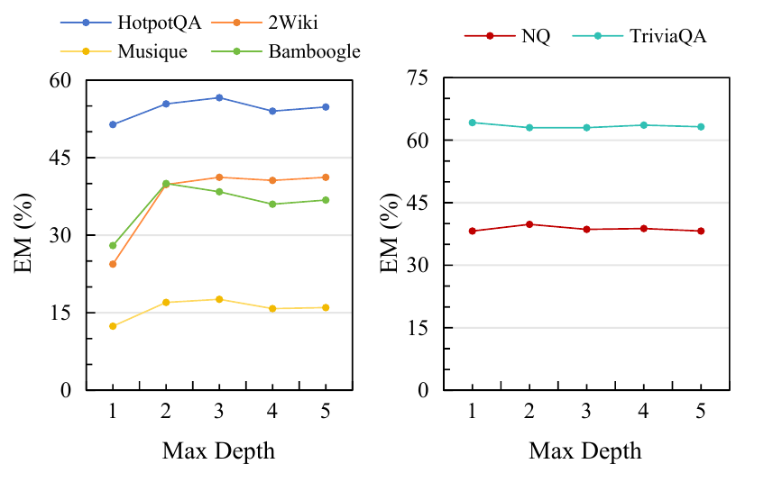
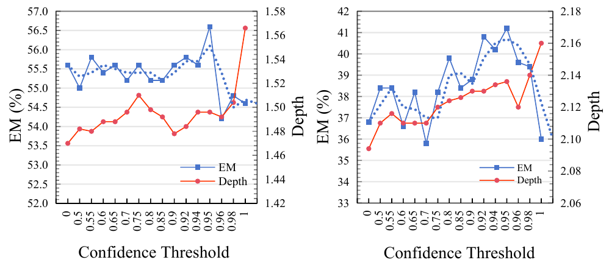

WWW '26 · Dubai, April 13–17, 2026
PruneRAG: Confidence-Guided
Query Decomposition Trees for
Efficient Retrieval-Augmented Generation
Harbin Institute of Technology, Shenzhen · South China University of Technology · Macquarie University · UNSW · CSIRO's Data61
outline
Talk Overview
background
Retrieval-Augmented Generation (RAG)
RAG enhances LLMs by retrieving external knowledge during inference — the dominant paradigm for knowledge-intensive QA tasks.
Multi-hop QA challenge: Complex questions require integrating evidence across multiple documents via iterative retrieval and reasoning.
Chain-based RAG
Linear step-by-step decomposition (IRCoT, ReAct, Search-o1)
Tree-based RAG
Explore multiple reasoning paths (ConTReGen, RAG-Star)
Common weakness
No confidence-guided control to decide when to stop, split, or refine
motivation · problem 1
Evidence Forgetting vs. PruneRAG
The model retrieves key evidence but fails to leverage it in later reasoning steps.
- Early evidence diluted by accumulated context
- Error propagation from intermediate steps
- EFR > 46% on HotpotQA for mainstream baselines
PruneRAG rejects low-quality answers and reflects to generate correct ones, preventing downward error propagation.

motivation · problem 2
Inefficiency in Existing Methods
Uncontrolled Expansion
Tree-based methods generate many low-value nodes without disciplined expansion control.
RAG-Star latency per query
Redundant Retrieval
Same information retrieved multiple times across different reasoning branches.
RAG-Star avg retrieval calls
No Confidence Signal
Lacking a principled criterion to accept good answers early or reject bad ones.
ProbTree EFR on MuSiQue
Existing methods lack a confidence-guided control mechanism that decides when to stop, when to split, and when to refine retrieval.
our approach
PruneRAG: Overall Framework

Adaptive Node Expansion
Regulates width/depth dynamically
Confidence-Guided Pruning
Accept reliable, reject uncertain
Fine-Grained Retrieval
Entity-level anchors for precision
method · tree structure
Query Decomposition Tree
Query Node
q = sub-query, d = retrieved documents, a = candidate answer
Entity Node
e = salient entities, d = documents retrieved via entities
Entity nodes are terminal — they handle fallback cases where a query is neither answerable nor decomposable.
Example Tree
method · adaptive expansion
Adaptive Node Expansion
Three-way decision for each node based on context sufficiency:
Answer
Sufficient evidence → generate answer, stop expansion
Decompose
Complex query → split into 2 sub-queries, continue recursion
Entity
Cannot decompose → extract key entities for targeted retrieval
method · confidence pruning
Confidence-Guided Pruning
Compute answer confidence from token-level log probabilities:
Why this works
High confidence = model is sure about generation → reliable answer, stop early
Low confidence = model is uncertain → likely hallucination, reject and explore further
This prevents error propagation and reduces invalid expansions — the key mechanism for mitigating evidence forgetting.
method · fine-grained retrieval
Fine-Grained Entity Retrieval
When a query can neither be answered nor decomposed further:
1. Treat query as the minimal semantic unit
2. Extract key entities (persons, locations, events)
3. Use entities as structured retrieval anchors
4. Targeted search in the knowledge corpus
Example: "Who is Danny Welch's employer?"
→ Entities: Danny Welch Employer of Danny Welch
Benefits
✦ Reduces noise in retrieval queries
✦ Improves retrieval specificity and precision
✦ Preserves semantic completeness
✦ Stabilizes the overall reasoning process
method · aggregation
Bottom-Up Tree Backtracing
Answer Leaf
Return stored high-confidence answer
Entity Leaf
Summarize retrieved documents
Internal Node
Aggregate children results

Case study: ProbTree suffers from evidence forgetting; PruneRAG prunes errors and recovers the correct reasoning chain.
method · inference procedure
PruneRAG Inference Algorithm
Step 1: Top-Down Construction
Initialize root node with complex query q
While queue not empty:
• Retrieve top-k documents
• Generate candidate answer + confidence
• If conf ≥ τA → mark as answer leaf
• Else if decomposable → create sub-query children
• Else → create entity node
Step 2: Bottom-Up Backtracing
Process leaves to root:
• Answer nodes → return stored answer
• Entity nodes → summarize evidence
• Internal nodes → aggregate children results
• Root outputs final answer a*
Key: Pruning reduces unnecessary exploration; backtracing guarantees coherent evidence aggregation.
evaluation · new metric
Evidence Forgetting Rate (EFR)
A new diagnostic metric to quantify evidence misuse:
Gi — golden evidence set (all required documents)
di — all documents retrieved across rounds
ai — model's predicted answer
ai* — ground-truth answer
Interpretation: EFR measures the proportion of cases where the model has already retrieved all golden evidence but still gives the wrong answer.
High EFR = evidence is retrieved but not utilized → forgetting problem.
experiments · setup
Experimental Setup
Datasets
• HotpotQA — multi-hop, cross-document
• 2WikiMultihopQA — structured multi-hop
• MuSiQue — compositional reasoning
• Bamboogle — instruction-style QA
• GPQA — graduate-level reasoning
Backbone Models
Baselines
Chain-based: ReAct, Search-o1, Self-RAG, MemoRAG
Tree-based: ConTReGen, RAG-Star, ProbTree
PruneRAG Config
• Max branching factor: 2
• Max tree depth: 3
• Confidence threshold τA: 0.95
• Retriever: BGE-large-en-v1.5
• Top-k documents per query: 5
• Corpus: Wikipedia 2018 dump
experiments · main results (RQ1)
Main Results: Qwen3-8B
| Method | Time(ms) | HotpotQA | 2WikiQA | MuSiQue | ||||||
|---|---|---|---|---|---|---|---|---|---|---|
| EM | F1 | EFR↓ | EM | F1 | EFR↓ | EM | F1 | EFR↓ | ||
| React | 4,497 | 30.0 | 36.7 | 46.4 | 23.6 | 28.7 | 54.2 | 10.2 | 15.7 | 69.5 |
| Search-o1 | 4,841 | 36.4 | 42.6 | 56.9 | 23.2 | 27.5 | 54.3 | 12.4 | 17.4 | 62.1 |
| ConTReGen | 4,507 | 47.6 | 55.4 | 30.5 | 29.0 | 33.9 | 27.8 | 11.8 | 17.2 | 60.0 |
| RAG-Star | 14,709 | 48.6 | 57.8 | 52.4 | 31.0 | 37.8 | 73.9 | 12.2 | 19.8 | 84.2 |
| ProbTree | 3,300 | 22.6 | 26.4 | 50.0 | 15.8 | 19.2 | 50.6 | 5.0 | 7.6 | 84.3 |
| PruneRAG | 2,254 | 56.6 | 63.6 | 23.1 | 41.2 | 44.4 | 26.0 | 17.6 | 25.6 | 38.4 |
F1 improvement (HotpotQA)
faster than multi-retrieval avg
EFR reduction avg
experiments · ablation (RQ2)
Ablation Study
| Method | HotpotQA | 2WikiQA | MuSiQue | ||||||
|---|---|---|---|---|---|---|---|---|---|
| EM | RN | EFR↓ | EM | RN | EFR↓ | EM | RN | EFR↓ | |
| PruneRAG (full) | 56.6 | 2.0 | 23.1 | 41.2 | 3.4 | 26.0 | 17.6 | 3.3 | 38.4 |
| w/o Confidence | 53.4 | 1.9 | 25.1 | 39.6 | 3.3 | 26.2 | 16.2 | 3.2 | 51.2 |
| w/o Answer | 37.8 | 3.3 | 48.2 | 33.2 | 4.4 | 55.3 | 15.0 | 4.8 | 65.0 |
| w/o Entity | 53.4 | 1.7 | 24.4 | 40.0 | 2.8 | 27.8 | 15.4 | 3.1 | 53.3 |
| w/o Adaptive | 42.0 | 5.3 | 43.2 | 32.0 | 4.6 | 50.0 | 15.2 | 5.8 | 67.7 |
Confidence + Adaptive are the most critical — removing either causes EFR to spike dramatically, confirming they are key to mitigating evidence forgetting.
w/o Answer increases retrieval calls (RN: 2.0→3.3) and EFR — preventing early termination destabilizes the entire reasoning process.
experiments · efficiency (RQ3)
Retrieval Efficiency Analysis
| Method | RN | Recall | RE |
|---|---|---|---|
| React | 2.61 | 47.5 | 13.2 |
| Search-o1 | 3.09 | 54.3 | 12.3 |
| Self-RAG | 1.89 | 54.3 | 16.7 |
| ConTReGen | 3.76 | 58.0 | 10.5 |
| RAG-Star | 6.73 | 42.9 | 5.4 |
| ProbTree | 4.00 | 61.7 | 10.2 |
| PruneRAG | 2.06 | 60.7 | 16.7 |
RE = Recall / Retrieval Number

Bubble size = EM accuracy. PruneRAG: fewer calls, strong recall, best accuracy.
experiments · hyperparameters (RQ4)
Hyperparameter Sensitivity

Max Tree Depth: Multi-hop optimal at depth 2–3; single-hop best at 1.

Threshold τA: Peak performance at [0.9, 0.95], stable across datasets.
PruneRAG is robust to hyperparameters. Depth 2–3 + τA = 0.95 forms a transferable configuration.
experiments · generalization
Scaling & Generalization
Larger Models (HotpotQA)
| Method | Llama-70B | Qwen3-32B | ||
|---|---|---|---|---|
| F1 | EFR↓ | F1 | EFR↓ | |
| React | 46.6 | 41.8 | 40.4 | 35.5 |
| ConTReGen | 57.7 | 30.7 | 58.7 | 36.4 |
| RAG-Star | 50.9 | 49.6 | 46.9 | 49.3 |
| PruneRAG | 66.0 | 29.2 | 66.0 | 24.6 |
Key Findings
Scaling alone doesn't solve forgetting. Even 70B models show EFR > 40% with baseline methods.
Alternative retriever (E5): PruneRAG maintains superiority — forgetting is retriever-agnostic.
Principled mechanisms (confidence pruning + adaptive expansion) remain necessary even with larger capacity.
conclusion
Takeaways
Structured Reasoning
Query decomposition tree unifies answering, decomposition, and entity retrieval in one framework.
Evidence Preservation
Confidence-guided pruning mitigates evidence forgetting — avg 20.8% EFR reduction.
Efficient Inference
4.9× faster than multi-retrieval baselines with highest accuracy.
F1 improved by +5.45% on average over the strongest baselines across three multi-hop QA benchmarks.
Project Page
https://fdioa.github.io/PruneRAG/